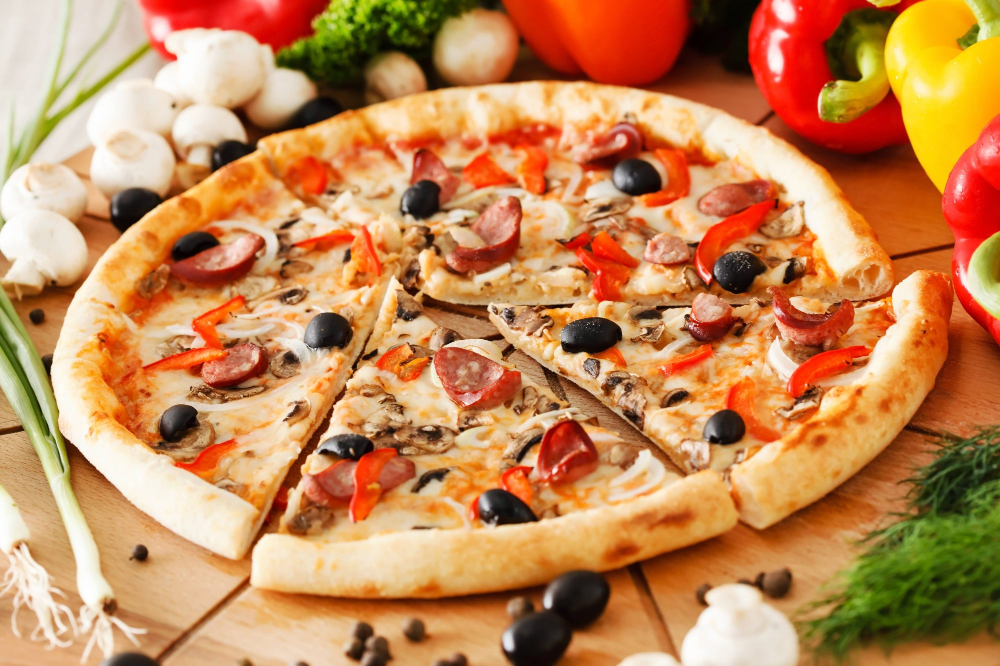
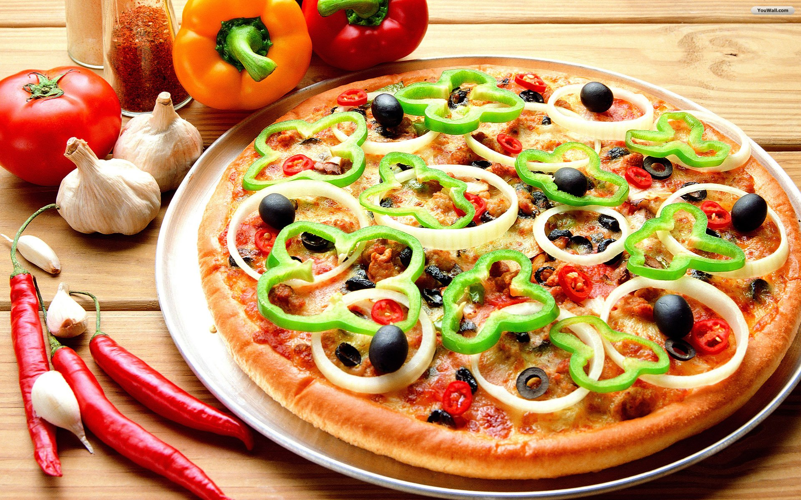
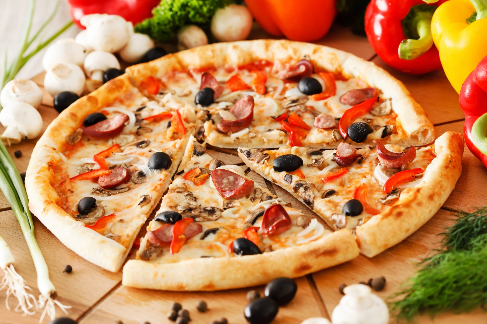
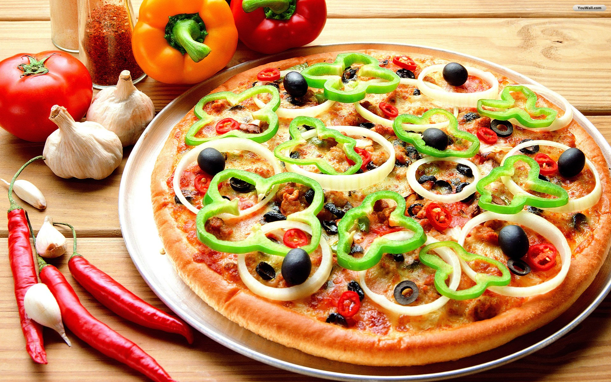
 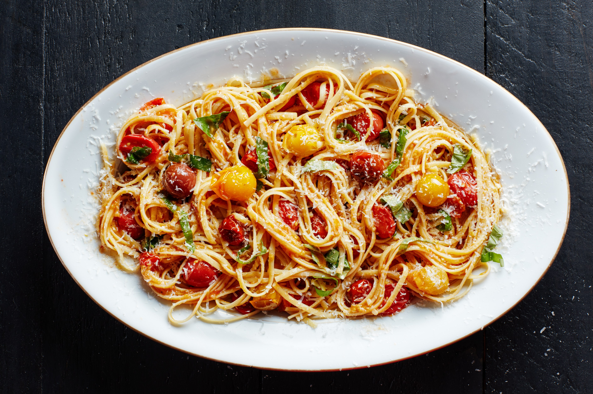
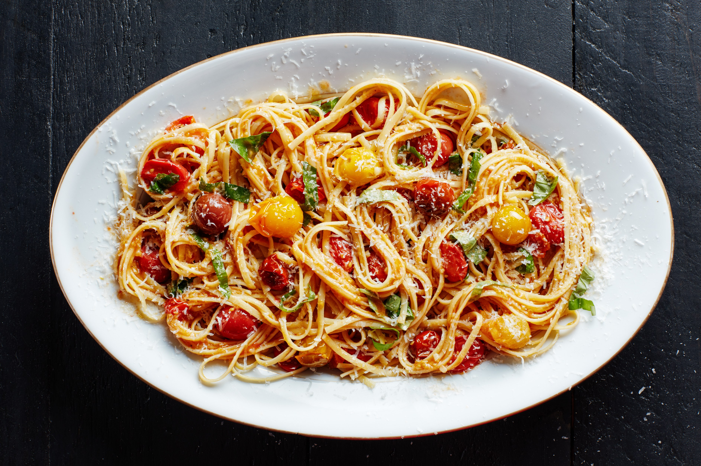
 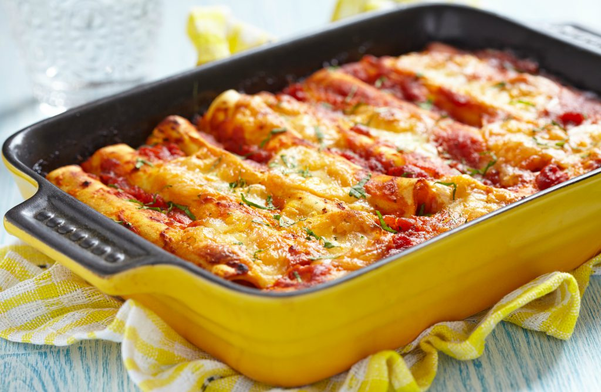
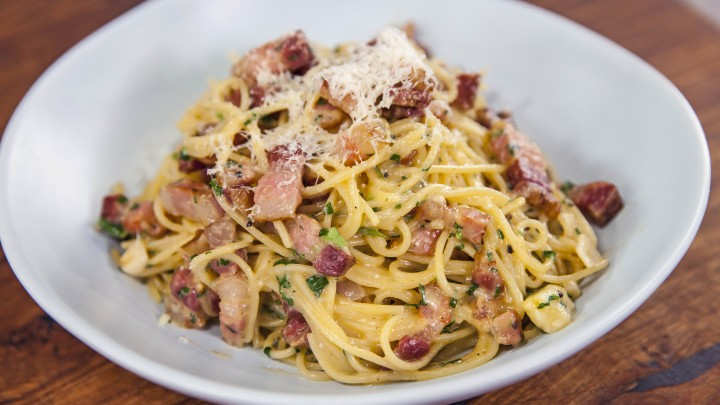
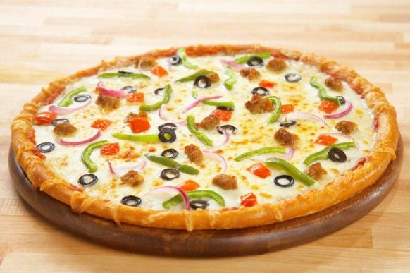
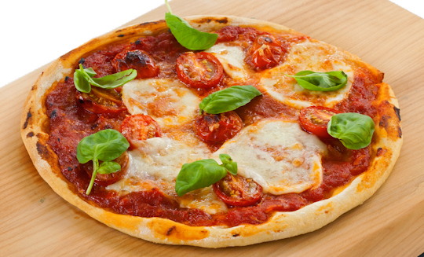
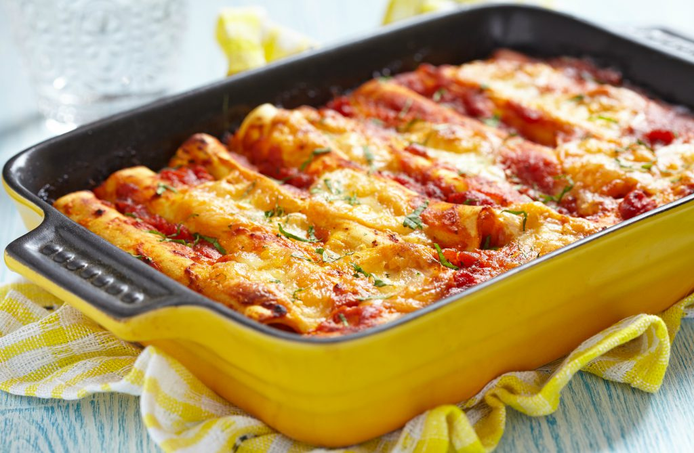
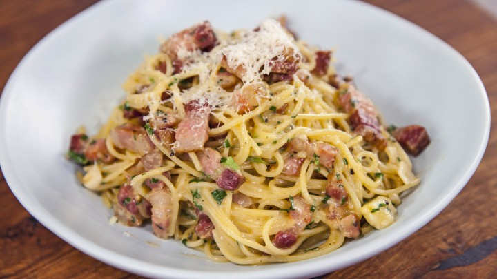
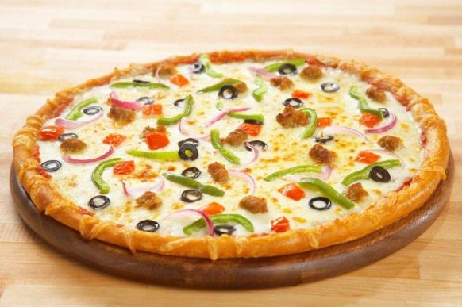
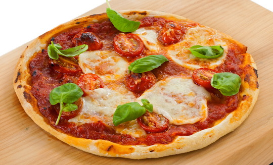
Pizza in trecut si de unde provine ...
Contrar credinței generale,[formulare evazivă] pizza nu este cert originară din Italia.[necesită citare] De fapt nu se știe cine a “inventat” această mancare delicioasă.[judecată de valoare] Deși cultura meditareană are variante incipiente înrădăcinate în dieta lor, variante similare au fost descoperite și în Egipt, Babilon și Imperiul Persan. Se știe că în Grecia Antică mâncau o pâine rotundă și plată, deasupra căreia puneau diferite condimente și ingrediente. Adițional, în cenușa rezultată în urma eruperii catastrofale a vulcanului Vezuviu din anul 74, au descoperit dovezi care ar indica faptul că o pâine rotundă din făină ar fi fost consumată la scară mare în acea perioada în Pompei și Neopolis (Neopolis fiind o colonie greacă care ulterior a devenit orașul Napoli). Însă, adevărul este că pizza putea fi inventată de oricine care a descoperit secretul combinării făinei cu apă și încălzirea acestui aluat pe o piatră fierbinte.